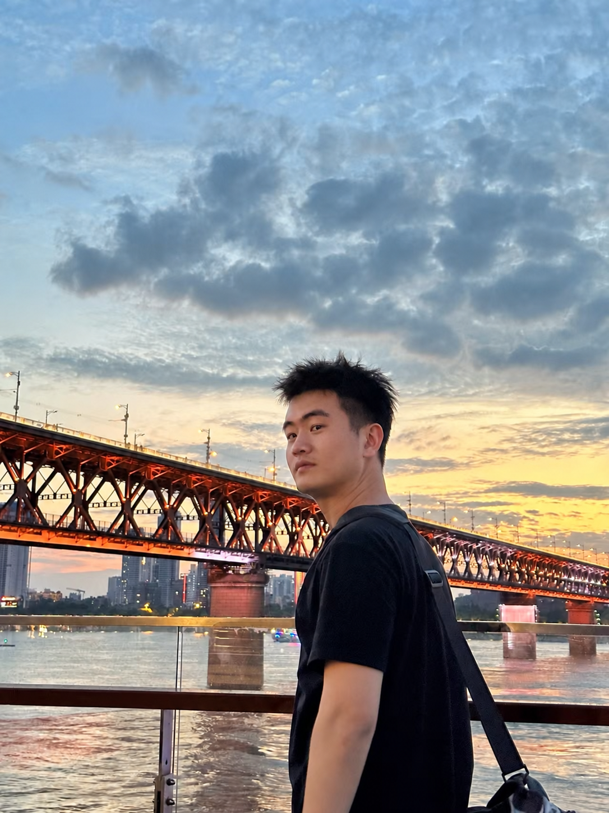

解决交付问题
结合现场老师傅的经验与资料查找，调整操作流程及工艺，将生产效率推进到客户可接受范围。
你好，我是于彬彬。
从焊接机器人的交付现场出发，
走向更靠近客户与业务的工作。
测控技术与仪器专业背景，有现场调试、客户协作与需求验证经历。关注工业智能与 AI 基础设施，也动手把日常问题做成可以运行的工具。

在客户现场，我需要与设备负责人、生产负责人、质检和操作人员协作，把交付过程中的问题，一件件推进到解决。
客户实际工件与系统预设模板不匹配，无法直接使用模板快速连续生产。我在现场调整操作步骤、优化工艺，并编写临时操作手册，推进培训与验收。
结合现场老师傅的经验与资料查找，调整操作流程及工艺，将生产效率推进到客户可接受范围。
编写操作手册，培训客户安排的 1–2 名操作人员；经质检验证合格后完成验收。
记录高频工件的人工作业痛点，通过出差报告反馈，并参与同一工件的机械设计与工艺试样验证。相关需求后来转化为新增订单。
进场前与设备负责人确认准备条件；到场后确认位置和注意事项，协调客户与公司人员安装。设备调试至满足生产要求后，完成操作培训、质检验证与验收，为销售后续尾款跟进提供验收资料。
在新增需求的试样阶段，我验证机械设计与工艺是否适用于同一工件，并反馈需要改进的地方；具体方案沟通和商务签约由相关同事推进。
研究、写作、饮食记录。
把重复的步骤整理成工作流，
把想法做成可以使用的 AI 工具。
面向自己的内容创作需求，将两个独立应用放进日常工作流：一个辅助热点研究与写作，一个把视频整理成文字素材和内容草稿。
写作助手热点扫描、多源资料整理、证据简报与风格化草稿。
视频转文章视频转写、内容清洗与摘要，整理短帖、Thread 和长文草稿。
把难以坚持的饮食记录，缩短成“拍照—核对—保存”。一个从个人减脂与训练场景出发的 AI 饮食记录工具。
支持食物识别、份量编辑、营养汇总与身体趋势记录；围绕 90 天计划，持续记录和阶段复盘。

围绕科技、AI 与市场话题整理信息、撰写内容。
也在这个过程中，持续练习研究、表达和工具应用。
工作之外，我喜欢各式的运动，也喜欢用相机记录沿途的风景。走进不同的地方，观察人和环境，是我保持好奇的方式。
Stay curious. Keep moving.
无锡砺成智能科技有限公司（信捷电气机器人部）
焊接机器人 · 客户现场交付 · 调试与培训测控技术与仪器 · 本科
从技术基础出发，在真实场景中持续学习。以现场技术经验为起点，我希望通过持续学习，逐步向销售工程师、To B 销售与大客户销售方向发展，更深入地理解客户需求，学习把技术价值转化为解决方案。
工作之外，我也在坚持健身、做好形象管理，并持续学习英语，为未来的沟通与合作做好准备。